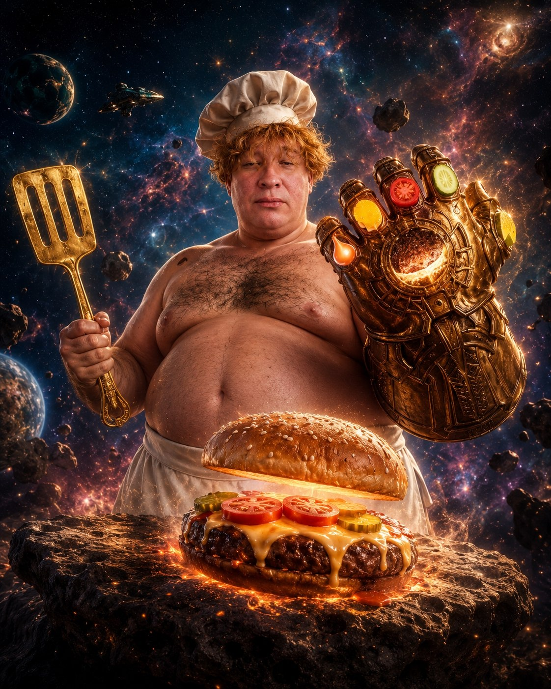
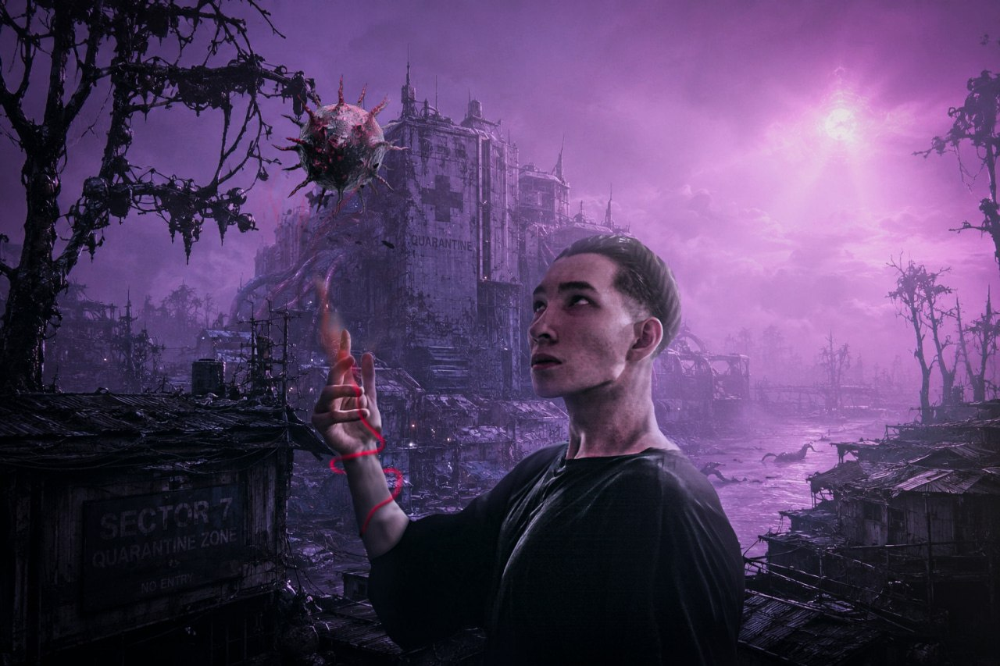

Карта восприятия, творчества и скрытых связей между человеком и миром.
LEYCORE — от англ. core —
сердцевина, и от рус. лей — лить. Симбиоз этих слов образует словосочетание —
льющийся в сердце. Кодекс лэйкора таков, что он недоступен людям, у которых не
развиты два полушария мозга. Важно, чтобы они работали слаженно, образуя сложные нейронные сети.
Проще говоря — он доступен творческим людям.
Восприятие мира вокруг себя с фильтрами. Они невидимы для людей с прошивкой npc-версий.
Например:
🤖 Обычный человек гуляет по улице:
Что он видит: здания, дорогу,
деревья, небо, машины.
👁️ Человек с лэйкором в голове гуляет по улице:
Что он видит:
Здания плавно переплетены с пространством, словно древние
титанические монолиты, держащие купол горизонта.
Дорога раскатывается вдоль всего города хромированной лентой,
связывающей векторы человеческих судеб.
Деревья шелестят кронами в ритме пульсации ночного воздуха,
фильтруя свет сквозь изумрудную сетку ветвей.
Небо нависает величественным океаном, меняющим градиенты от
закатного пурпура до суверенной космической тьмы, а вечерний мрак выглядывает из-под
листьев у старого моста, превращая обычный путь домой в сакральное приключение для
двоих.
Это не только по-иному ощущать пространство. Это видеть человека по-иному. Видеть его работу над
своей внешностью, видеть труд, вложенный в эту личность, будь то проблемы, будь то пустота.
Лэйкор принимает каждый характер и не создает воронку ЧСВ.
Ты сам придумываешь ивенты, ты создаешь вокруг себя реальность
собственными руками. Ты воспринимаешь реальность как игру, где законы мира — это квесты, а
основные цели — водить краской по плоти вселенной и наслаждаться своими рисунками, живя в них.
Это самодостаточность: ты не грустишь от отсутствия близких людей. Ты настолько близок с собой,
что ты сам себе друг, ты дружишь со своими страхами, которые когда-то вывел на свет.
Он очень гибок. Если вплести в него соавтора — того, кто сам познал Лэйкор — то мир
вокруг тебя окрасится такими красками, которых не существует в реальности. Словно фильтры,
встроенные в твой мозг, взрываются и расцветают, образуя на старом фундаменте сверхновое
поколение восприятия.
Прописав свой код лет эдак 30 назад и забросив его в ноутбуке, обычный человек через 40 лет не
найдет эти файлы в тысячах замусоренных папок и закроет крышку. Человек с Лэйкором создает
отдельную подсвеченную директорию на видном месте, сохраняет к ней Root-доступ и в любое время
может переписать свой системный код.
Сила лэйкора в голове человека способна породить самые
интересные, упоротые, завораживающие и комичные образы. Это словно магическая приправа для всех
блюд, которую можно купить лишь сотнями дней работы над собой и своим мышлением. Примеры работ
смотрим во вкладке "Сказки / Апостериори".
У каждого человека есть аура, будь то злая, будь то хорошая.
Опытный человек сразу распознает её. Проще говоря — это психология на уровне магии. С помощью
этого навыка можно предотвратить контакт с человеком, имеющим странную ауру.
Когда человек, прошедший сквозь годы личного ада и познавший самые тёмные, гнилые уголки этого
мира, выбирается на свет с фундаментальным пониманием: истинная суверенность — это быть искренне
добрым, но смертельно вооружённым.
Он льется в сердцах всех людей, однако не каждый способен обнажить его.
Это объяснение различных вещей в жизни на языке метафор. Это
язык, на котором невероятно красивые вещи объясняются невероятно непонятными словами.
Например, комплименты:
Твоя глубинная, обволакивающая и живая суть
(плацентарность) настолько мощна, что сотрясает основы моего мышления (тектонические
плиты). Каждый лучик твоей уникальности, когда ты показываешь его миру, пробуждает у
меня непреодолимое желание говорить о тебе бесконечно, забирая себе все слова
вселенной.
Твоя естественная красота и глубина (мириада щёлочей
меланина) настолько завораживают, что искривляют привычную реальность. Это
заставляет саму природу удивляться, а в моем внутреннем мире происходит взрыв
грандиозных эмоций и чувств к тебе.
МЕНЮ ВАСИЛИЧА

⚡️ ДЕМИУРГ ВАСИЛИЧ ⚡️
«Мстители, общий сбор на обед! Один щелчок Перчаткой Продуктов — и половина серого голода во вселенной растворяется в сухом анаболизме.»
ХРАНИЛИЩЕ

🔮 Сказочный Василич 🔮
СЛОВАРЬ ЛЭЙКОРА
АРКАДНЫЙ ЗАЛ ЛЭЙКОРА
💨 ПОЛЕТ ЦАРЕВНЫ
Жми ПРОБЕЛ или КЛИКАЙ мышкой, чтобы Царевна пукала и набирала высоту! Облетай стены овсянки и долети до десерта!